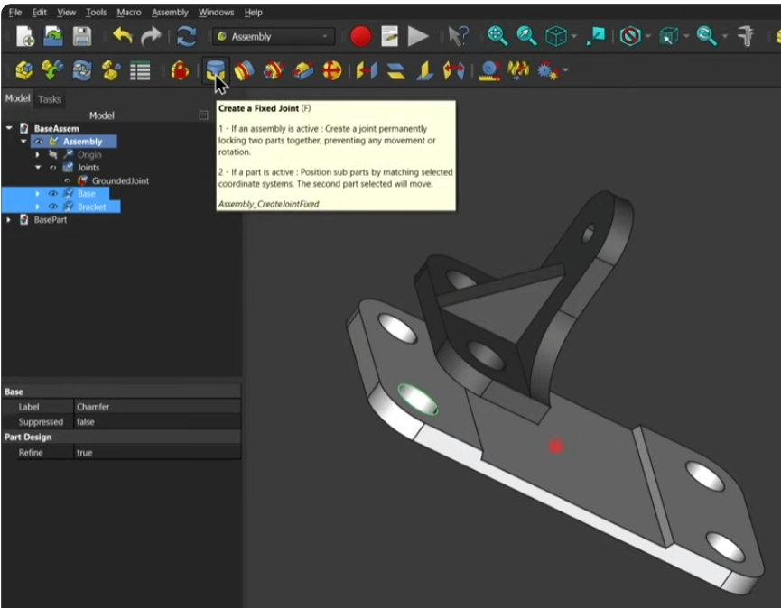
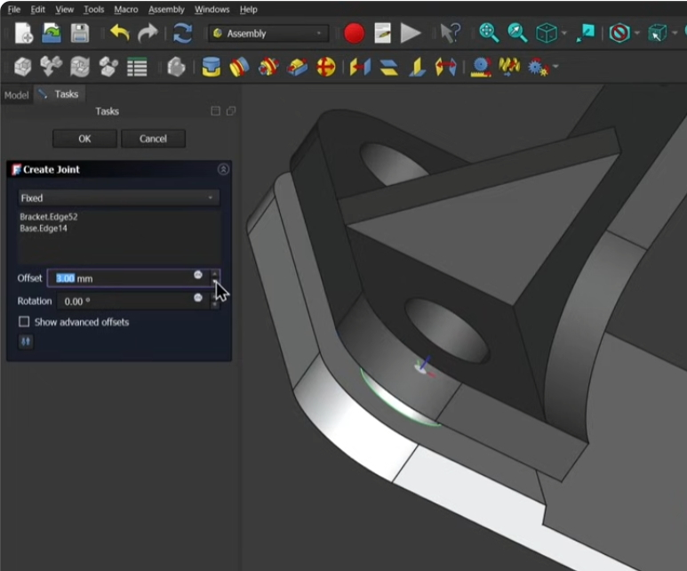
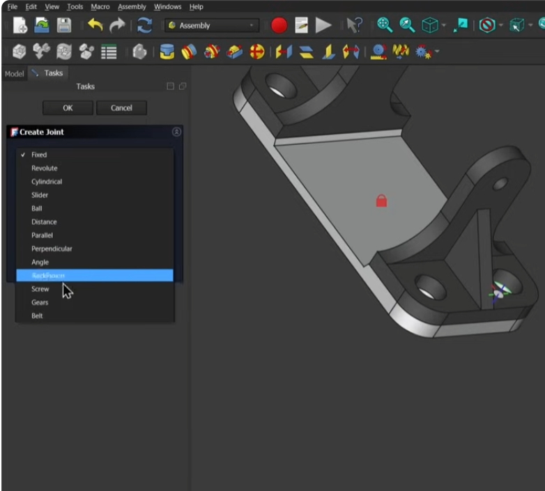

FreeCAD 1.0 Assembly in 30 minutes Beginners Crash Course / Tutorial 2025
...
...
* Tree Element "Joints" ->

These 2 body is assembled by selecting 2 feature circle which are holes for fasteners, then click "Create a new joint" button, then select "Planar" type, then click "OK".
You can also set an offset and rotation where the axis is along the center of the 2 circles.

Even after finishing the primary assembly operation you can change the joint type and parameters.
Fixed
Revolute
Cylindrical
Slider
Ball
Distance
Parallel
Perpendicular
Angle
RackPinion
Screw
Gears
Belt

If there are multiple joints, the joints can be seen in the tree element "Joints".
While trying to delete or perform some operation on any body object, select that body from the tree.
1 Click select the feature like "Pad" or "Pocket" under the body.
2 Click select the body but still feature is selected in the tree view.
3 click actually select the body from the tree view.
Sketch Bending
3D Sketch in FreeCAD 1.0 | Projected Curves | Exercise 10
FREECAD:Pipe Routing, make FreeCAD do the work
Closed Sketch Bending Partially achived by draw 1 closed sketch and 1 open sketch.
Drawing the closed sketch on XY plane and the guide curve on XZ plane perpendicular.
Then in the Curve workbench Apply